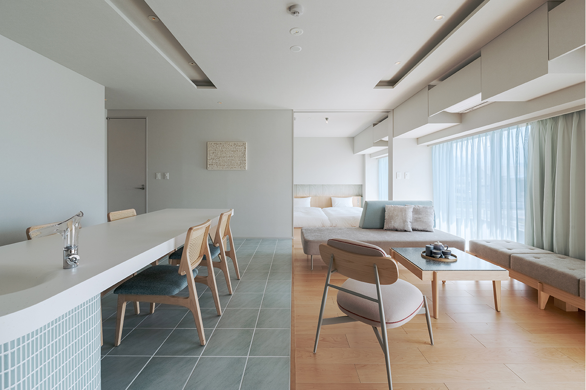
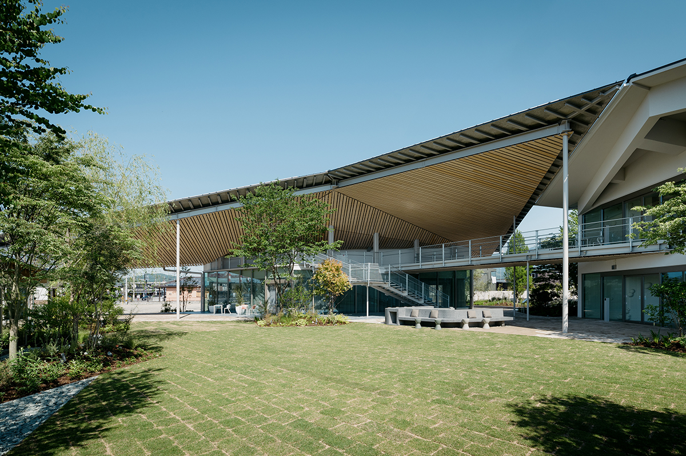
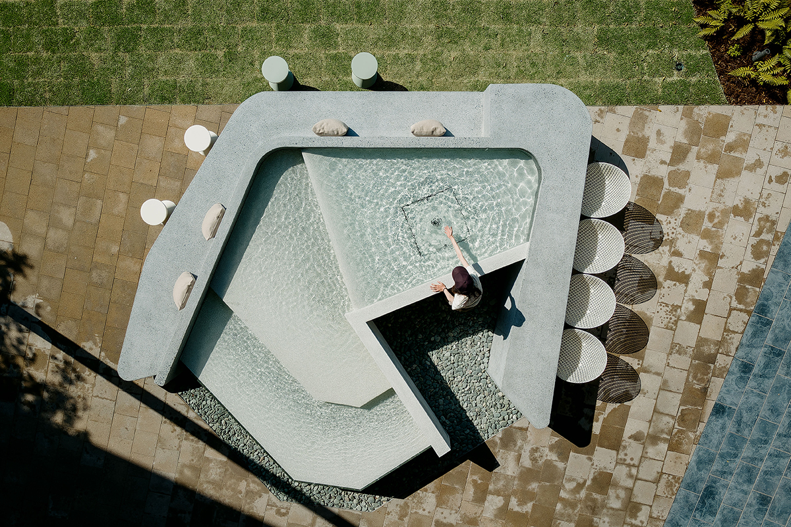

Префектура Эхимэ · Сайдзё · отель
ITOMACHI HOTEL 0 в Сайдзё: отель, который производит свою энергию сам

В городе Сайдзё, который называют водной столицей Эхимэ, стоит отель, первым в Японии получивший статус здания с нулевым энергопотреблением. Его спроектировал Кэнго Кума, а на большой крыше установлены солнечные панели.
Отель
Ноль в названии
В мае 2023 года в Сайдзё открылся ITOMACHI HOTEL 0. Он стал первым в Японии отелем, получившим признание ZEB, то есть статус здания с нулевым энергопотреблением: за год оно расходует столько же первичной энергии, сколько производит само. При этом внутри сохраняется комфортный микроклимат.
Проект сделал Кэнго Кума, один из самых известных современных архитекторов Японии. Главная примета здания это огромная кровля, напоминающая о священной горе Исидзути, а на всей её площади установлены солнечные панели, которые и делают возможным нулевое энергопотребление.

Номера
Два типа
Номеров 57, и они делятся на два типа. Первый это обычные номера в цветах местного синего камня иё-аоиси: они подходят и для рабочей поездки, и для отпуска. Второй это виллы, где к каждому номеру прилагается собственная ванна под открытым небом.
Ландшафт и интерьеры отсылают к самоизливающимся родникам «утинуки» и к древнему камню, чей синий цвет и переменчивый узор так красивы.

Еда
Местное на столе
Питание здесь построено на продуктах от местных производителей: овощи и фрукты, цельное зерно, бурый рис. Меню, составленное под присмотром диетолога, подают в формате делисьёза, чтобы гость сам выбирал, что положить на тарелку.
Город
Водная столица
Сайдзё известен как город воды. Здесь бьют родники «утинуки»: вода из подземных слоёв поднимается сама, без насосов, и её используют и в быту, и в кулинарии. Гостям отеля предлагают не только переночевать, но и разобраться, как устроена энергетика здания: в холле есть наглядные схемы, а для желающих проводят экскурсии по системе энергооборота.
ITOMACHI HOTEL 0
- Адрес
- префектура Эхимэ, Сайдзё, Цуитити, 250-7
- Телефон
- +81 897-47-7568
- Цены
- от 8690 иен за ночь с завтраком за человека (с налогом и обслуживанием)
- Номера
- 57
- Заезд / выезд
- заезд с 15:00 (последний заезд в 22:00), выезд до 11:00
- В отеле
- кафе, коворкинг, студия
- Как добраться
- около 1 часа 20 минут на общем шаттле от аэропорта Мацуямы; около 10 минут на такси от станции Иё-Сайдзё